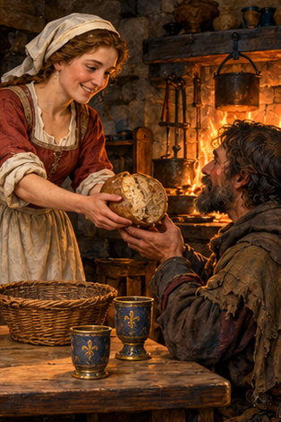
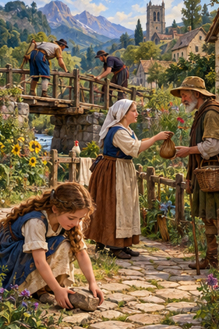
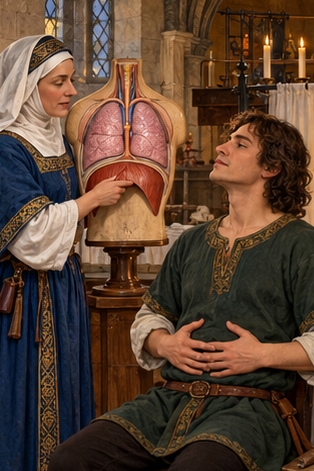
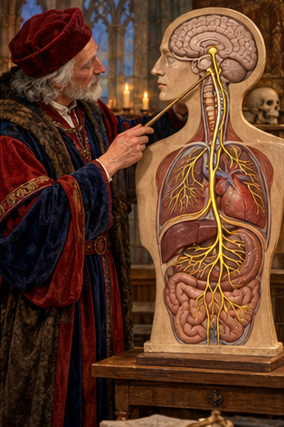
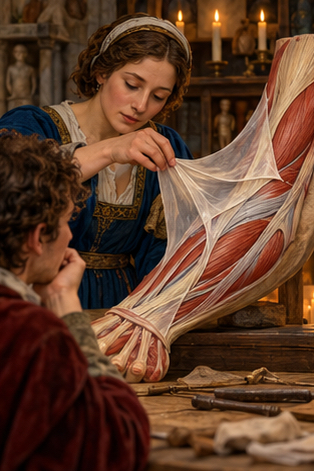
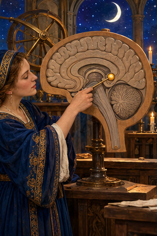
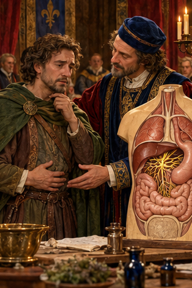

PDD Batch 20 — review only Ten 314×471 portraits, in manifest order. Not installed.
Original composite 1. PDD 216 — La música pone alas al corazón y pensamientos al vuelo 2. PDD 217 — Siempre imaginé que el Paraíso sería algún tipo de biblioteca 
3. PDD 218 — Amor es el pan de la vida, amor es la copa divina… 4. PDD 219 — volver a pasar por el corazón 
5. PDD 220 — Mucha gente pequeña, en lugares pequeños, haciendo cosas pequeñas, puede cambiar el mundo 
6. PDD 221 — El diafragma 
7. PDD 222 — Nervio Vago 
8. PDD 223 — La fascia 
9. PDD 224 — La glándula pineal 
10. PDD 225 — El plexo solar